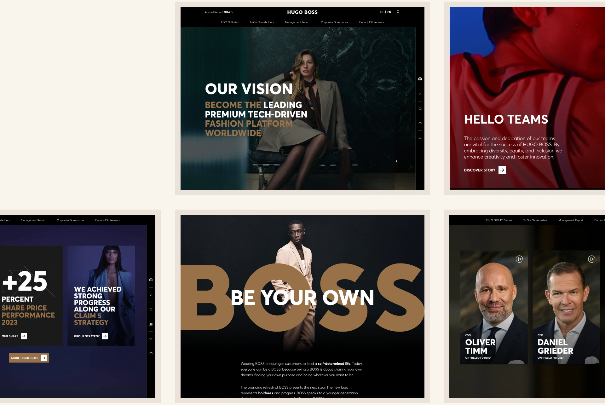
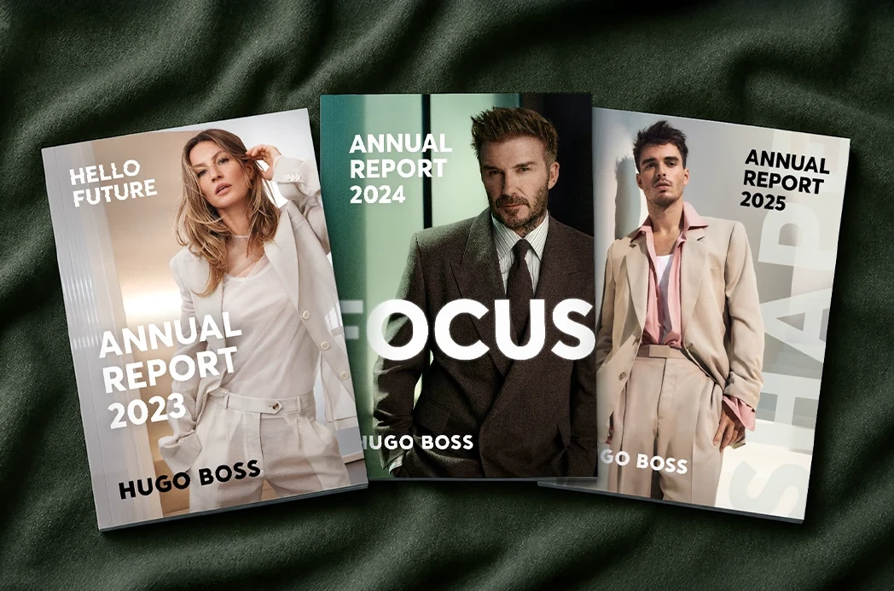
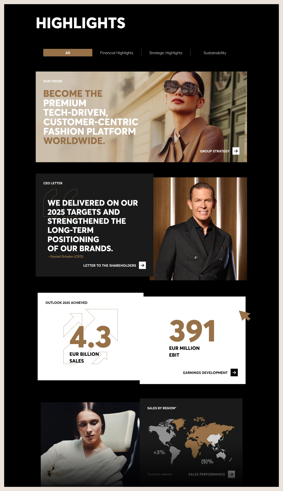

For a global fashion brand like HUGO BOSS, the annual report needs to reflect the same level of quality and precision as every other brand touchpoint.
After leading the successful pitch design in 2021, I became Lead Designer for the annual reports from 2023 to 2025. Over these three reporting cycles, I was responsible for evolving the report while translating each year’s annual theme into a fresh visual direction.

Motto design


Digital Experience
